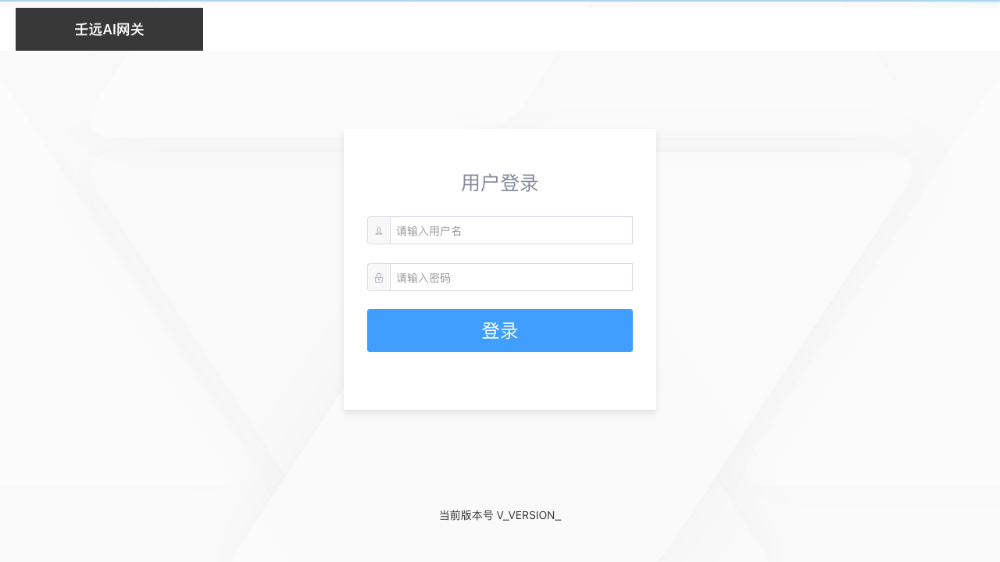
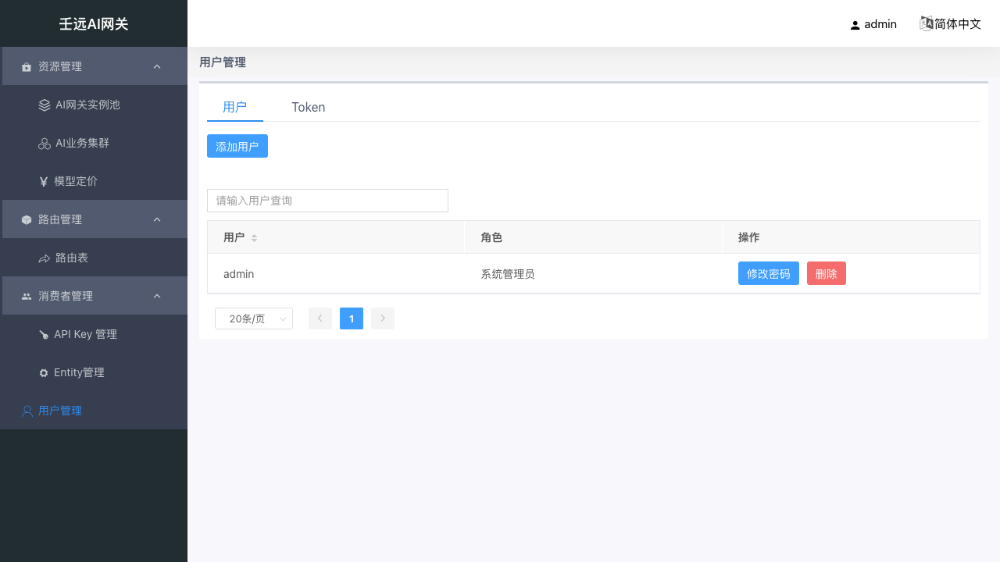
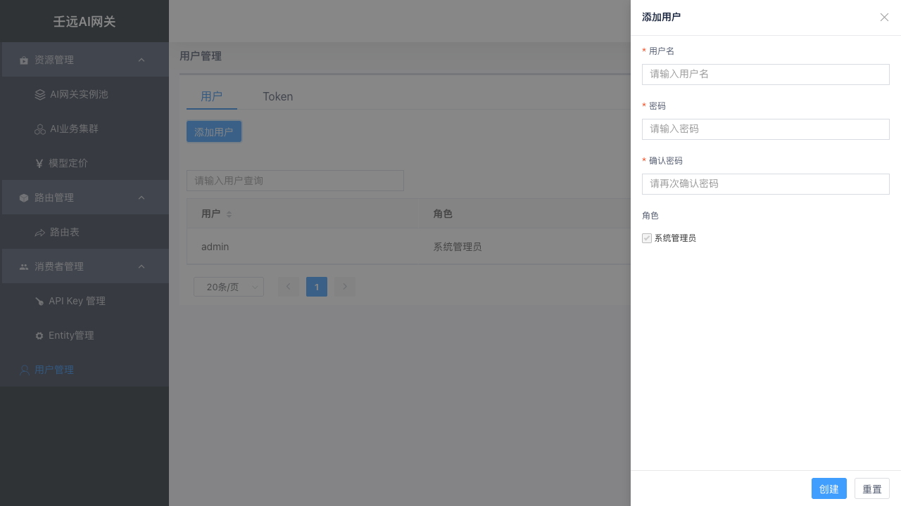
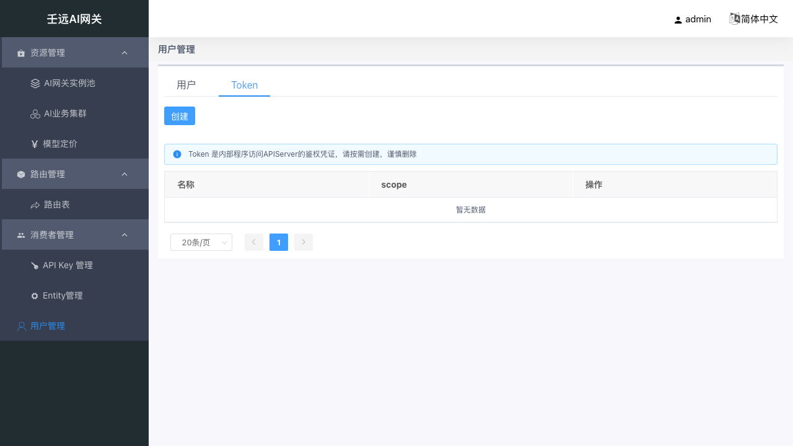
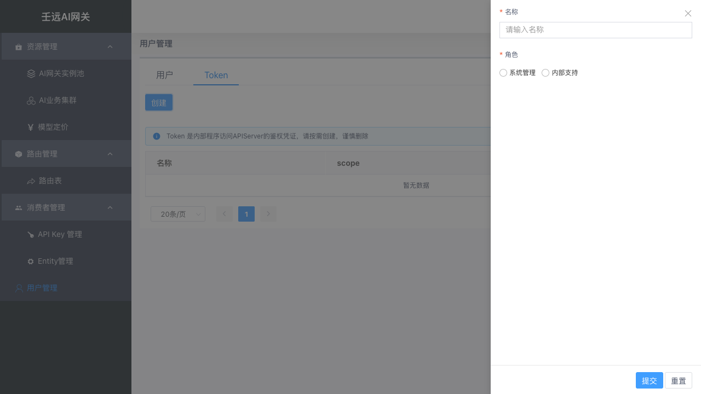

01 登录与用户管理
本章覆盖控制台登录、用户管理、Token 管理与退出登录。控制台仅面向管理员，所有功能需登录后访问。
1.1 登录
登录入口
浏览器打开控制台登录页，进入登录页面。页面顶部显示「AI 网关」标题，中部为登录表单，底部显示当前版本号。
- 单机本地部署：
http://127.0.0.1:8183/login - 远程服务器部署：
http://<服务器IP或域名>:8183/login（与你在浏览器中访问控制台时地址栏一致）

登录操作
系统默认提供管理员账号，首次登录可直接使用：
| 字段 | 默认值 |
|---|---|
| 用户名 | admin |
| 密码 | admin |
登录步骤：
- 在用户名输入框输入
admin（带用户图标前缀）。 - 在密码输入框输入
admin（带锁图标前缀）。 - 点 > 建议首次登录后，通过 1.2.4 修改密码 及时修改默认密码。
校验规则：
- 用户名和密码均为必填，留空时输入框下方提示「请输入用户名」/「请输入密码」。
- 点击「登录」后按钮进入 2 秒防抖（防止重复提交），期间不可再次点击。
登录成功
登录成功后自动跳转到控制台首页，页面显示欢迎语「系统管理员 {用户名}，欢迎！」。顶部导航栏右侧显示当前登录用户名，左侧显示功能菜单。
控制台账号分「系统管理员」与「系统管理员（只读）」两种角色（见 1.2 用户管理）。只读角色登录后可浏览全部页面，但所有写操作按钮隐藏，仅保留只读查看能力，详见 1.2.6 只读视角。
1.2 用户管理
用户管理页面包含两个页签：用户（控制台管理员账号）和 Token（内部程序访问凭证）。通过页面顶部的 Tab 切换。
默认进入「用户」页签。
1.2.1 用户列表
用户页签展示所有控制台管理员的账号列表。

表格列说明：
| 列名 | 说明 |
|---|---|
| 用户 | 用户名，支持按用户名搜索和排序 |
| 角色 | 系统管理员 / 系统管理员（只读），支持按角色搜索筛选 |
| 操作 | 变更角色、修改密码、删除 |
列表上方有「添加用户」按钮（右上角）。
只读视角：以「系统管理员（只读）」登录时，列表上方的「添加用户」按钮与操作列的「变更角色 / 修改密码 / 删除」按钮均隐藏，仅保留只读查看（见 1.2.6 只读视角）。
1.2.2 添加用户
点击列表上方的「添加用户」按钮，右侧弹出创建抽屉。

表单字段：
| 字段 | 说明 | 校验规则 |
|---|---|---|
| 用户名 | 必填，最多 64 字符 | 1-64 字符；仅允许字母、数字、点(.)、下划线(_)、中划线(-)；不能以点、下划线、中划线开头或结尾；保留名 admin、root、system 不可用 |
| 密码 | 必填 | 8-128 字符；不能包含空格；不能与用户名相同或为用户名的逆序 |
| 确认密码 | 必填 | 必须与密码一致 |
| 角色 | 单选：系统管理员 / 系统管理员（只读） | 必填，默认选中「系统管理员」 |
抽屉底部有「创建」和「重置」按钮。点击「创建」提交表单，校验通过后关闭抽屉并刷新列表；点击「重置」清空所有输入。
1.2.3 变更角色
在用户列表的操作列点击「变更角色」按钮，右侧弹出变更角色抽屉。
表单字段：
| 字段 | 说明 | 校验规则 |
|---|---|---|
| 用户名 | 显示目标用户名，不可编辑 | 灰色禁用状态 |
| 角色 | 单选：系统管理员 / 系统管理员（只读） | 必填 |
- 点击「提交」调用
PATCH /auth/users/{user_name}/role修改该账号角色，成功后关闭抽屉并刷新列表。 - 内置账号
admin保护：其角色固定为「系统管理员」，抽屉中不显示角色单选项，仅提示「内置账号 admin 角色固定为系统管理员，不可变更」；对admin降级请求会被拒绝。 - 只读视角下本按钮隐藏（见 1.2.6 只读视角）。
1.2.4 修改密码
在用户列表的操作列点击「修改密码」按钮，右侧弹出修改密码抽屉。
表单字段：
| 字段 | 说明 | 校验规则 |
|---|---|---|
| 用户名 | 显示目标用户名，不可编辑 | 灰色禁用状态 |
| 原密码 | 仅修改自己的密码时显示 | 修改自己密码时必填 |
| 新密码 | 必填 | 8-128 字符；不能包含空格；不能与用户名相同或为用户名的逆序 |
| 确认密码 | 必填 | 必须与新密码一致 |
修改自己密码 vs 修改他人密码：
- 修改自己的密码：表单包含「原密码」字段，需输入原密码验证身份。提交成功后弹出提示「当前用户密码已修改请重新登录」，点击确定后自动跳转到登录页，需重新登录。
- 修改他人密码：表单不显示「原密码」字段（无需原密码即可重置）。提交成功后仅关闭抽屉并提示成功，不强制重新登录。
1.2.5 删除用户
在用户列表的操作列点击「删除」按钮，弹出确认框「是否确认删除用户 {用户名}?」。
- 删除其他用户：确认后立即删除，列表自动刷新。
- 删除当前登录用户：确认后弹出提示「当前用户已被删除请重新登录」，点击确定后自动跳转到登录页。
1.2.6 只读视角
以「系统管理员（只读）」角色的账号登录后进入只读视角：全部页面均可浏览，但所有写操作按钮统一隐藏，仅保留只读查看能力。
隐藏范围（全站所有页面）：
- 列表页工具栏的「创建 / 添加 / 导入」等新建入口；
- 操作列的「编辑 / 删除 / 变更角色 / 修改密码」等写按钮；
- 路由、缓存等编辑类页面的「进入编辑模式 / 本地保存 / 提交并生效」等按钮；
- 详情抽屉内的写操作，如 API Key / Entity 详情中的「重置配额」（见 09 章、08 章）；
- 用户管理中的「添加用户」与 Token 的「创建」按钮。
保留的只读能力（示例）：
- 各列表页的「详情 / 查看」入口；
- API Key / Entity 列表的「管理路由规则」（跳转查看路由规则）；
- 模型服务商的「查询模型价格」。
密钥类字段的差异：只读视角下，读取 API Key、服务商服务鉴权 Key、Token 等端点返回的密钥值由后端脱敏为掩码（如 ********），前端原样展示，掩码值不可用于鉴权；系统管理员登录时仍返回明文。详见 09 章、03 章、1.3.3 查看 Token 详情。
写能力的最终防线在后端：即使绕过前端，只读角色对写端点也会被拒绝。
1.3 Token 管理
切换到页面顶部的 Token 页签，进入 Token 管理页面。
Token 是内部程序访问 API Server（管理面 API 服务，非数据面转发入口）的鉴权凭证。页面顶部有提示条：「Token 是内部程序访问 APIServer 的鉴权凭证，请按需创建，谨慎删除」。
1.3.1 Token 列表

表格列说明：
| 列名 | 说明 |
|---|---|
| 名称 | Token 名称 |
| scope | 权限范围，显示「系统管理」「系统管理（只读）」或「内部支持」，支持按 scope 搜索筛选 |
| 操作 | 详情、删除（只读视角下仅保留「详情」） |
列表上方有「创建」按钮（右上角，只读视角下隐藏）。
1.3.2 创建 Token
点击列表上方的「创建」按钮，右侧弹出创建抽屉。

表单字段：
| 字段 | 说明 | 校验规则 |
|---|---|---|
| 名称 | 必填，最多 64 字符 | 1-64 字符；仅允许字母、数字、点(.)、下划线(_)、中划线(-)；不能以点、下划线、中划线开头或结尾；保留名 admin、system、default 不可用 |
| 角色 | 必填，单选 | 系统管理（System）/ 系统管理（只读）（SystemReadonly）/ 内部支持（Support） |
scope 说明：
- 系统管理（System）：拥有所有资源的完整管理权限（查看、创建、编辑、删除、导出）。
- 系统管理（只读）（SystemReadonly）：可查看全部资源，但不可创建、编辑或删除任何资源，与服务端「系统管理员（只读）」角色一致。
- 内部支持（Support）：仅可导出部分资源的数据（实例池、路由、API Key 等），不可创建、编辑或删除任何资源。适用于内部运维排查、数据备份等只读场景。
抽屉底部有「提交」和「重置」按钮。点击「提交」校验通过后创建 Token，关闭抽屉并刷新列表；点击「重置」清空所有输入。
1.3.3 查看 Token 详情
在 Token 列表的操作列点击「详情」按钮，右侧弹出详情抽屉。
详情抽屉展示以下信息：
| 字段 | 说明 |
|---|---|
| 名称 | Token 名称 |
| Scope | 权限范围（系统管理 / 系统管理（只读）/ 内部支持） |
| Token | Token 值；系统管理员为明文值，只读视角为后端返回的掩码值（不可用于鉴权） |
1.3.4 删除 Token
在 Token 列表的操作列点击「删除」按钮，弹出确认框「是否确认删除 {Token名称}?」。确认后立即删除，列表自动刷新。
注意：删除 Token 会导致使用该 Token 的程序无法访问 API Server，请确认无程序依赖后再删除。
1.4 退出登录
点击页面右上角的用户名，在下拉菜单中选择「退出登录」，弹出确认框「确认注销?」。
确认后系统注销当前会话并跳转到登录页。取消则不做任何操作。